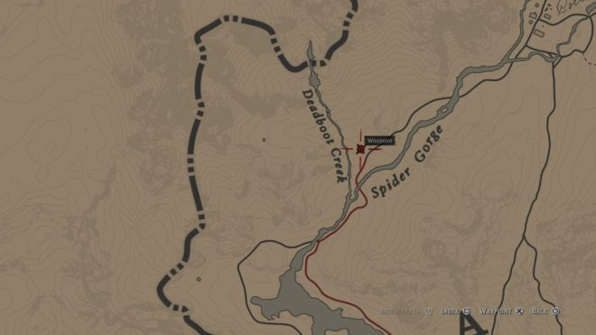

Сверхъестественные силы, кости давно умерших существ, странные личности явно не из этих мест – в Red Dead Redemption 2 есть пасхалки на любой вкус. Часть из них нужна для получения стопроцентного прохождения, часть оставлена просто так, в развлекательных целях, и представляет из себя ненавязчивые отсылки к популярной культуре и другим играм, от Rockstar и не только. Оставлять пасхалки в своих виртуальных мирах вообще стало своего рода традицией Rockstar, и вполне логично, что в RDR 2 не стали её нарушать. Стоит, однако, отметить, что в этой игре искать их стало ещё интереснее, ведь Артур не просто выступает в роли стороннего наблюдателя, как это происходит с большинством пасхалок в GTA V, но и взаимодействует с ними. Благодаря его привычке заносить увиденное в дневник и своеобразному подходу к описанию событий, каждая такая пасхалка ощущается важной частью игрового мира. Итак, вот те «достопримечательности», которые вы обязательно должны посетить. Каждая из них снабжена меткой на карте, чтобы вы точно знали, где искать.
- МАЛЕНЬКАЯ ЦЕРКОВЬ
- МОНАХ В ГРИЗЗЛИС ИСТ
- ПРИШЕЛЬЦЫ
- ПОЗОР СЕМЬИ БРЕЙТУЭЙТОВ
- АВИАКАТАСТРОФА
- ЖУТКОВАТЫЙ ОБЕЛИСК
- ЛИЦО В СКАЛЕ
- ЛИЦА НА ДЕРЕВЬЯХ
- ПОЕЗД-ПРИЗРАК
- СЕКРЕТ СЕМЬИ ГРЭЙ
- НОРА ХОББИТА
- КОСТИ МАМОНТА
- СТАРАЯ ГРОБНИЦА
- ЗАМЁРЗШИЙ ВОИН
- РИТУАЛЬНОЕ ЖЕРТВОПРИНОШЕНИЕ
- СКЕЛЕТ БИГФУТА
- РУКОТВОРНЫЙ МОНСТР
- КОСТИ КИТА
МАЛЕНЬКАЯ ЦЕРКОВЬ
Одна из самых странных пасхалок в Red Dead Redemption 2 прячется к востоку от Лаке. Это маленькая церквушка, настолько маленькая, что Артур может спокойно достать рукой до крыши. При желании можно пробраться внутрь, но для этого придётся пригнуться.Для кого её построили? Для детей? Или может быть, это такая вычурная собачья конура? Неизвестно. А вдруг это часть какого-то ритуала? Пожалуй, лучше не задерживаться там слишком надолго…
МОНАХ В ГРИЗЗЛИС ИСТ
Высоко в горах в Гриззлис Ист, немного южнее букв G и R, обозначающих название местности на карте, можно повстречать человека азиатской внешности в одеянии восточного монаха, мирно медитирующего на краю скалы. Вот уж кого не ожидаешь увидеть в мире Дикого Запада – подобные персонажи в вестернах обычно не встречаются.
ПРИШЕЛЬЦЫ
Доберитесь до Изумрудного ранчо, а затем двигайтесь на север до тех пор, пока не увидите небольшую хижину на берегу. Внутри – следы каких-то жутких событий и записка, которую можно подобрать. Послание в записке велит вернуться во второй час первой четверти луны, и если действительно прийти на то же место в два часа ночи, когда луна будет освещена наполовину, то вы станете свидетелем зрелища, которое уместнее смотрелось бы в игре про космос.ПОЗОР СЕМЬИ БРЕЙТУЭЙТОВ
 Если вы уже доиграли до третьей главы сюжета, то наверняка поняли, что семью Брэйтуэйтов хорошими людьми не назовёшь. Красноречивое подтверждение этому можно найти неподалёку от их особняка.
Если вы уже доиграли до третьей главы сюжета, то наверняка поняли, что семью Брэйтуэйтов хорошими людьми не назовёшь. Красноречивое подтверждение этому можно найти неподалёку от их особняка.
В западной части владений семьи стоит небольшая туалетная кабинка. Подойдя поближе, вы увидите, что она перевязана цепями, а внутри сидит девушка, явно недовольная своим заточением. Это одна из дочерей семьи, которую решили спрятать от посторонних глаз из-за дефектов внешности и психических расстройств. Брэйтуэйты побоялись, что если отправить её в лечебницу, пойдут ненужные слухи, и их репутация пострадает. Дальнейшую судьбу девушки можно узнать, посетив это место во время Эпилога.
АВИАКАТАСТРОФА
Еще одна пасхалка, на сей раз менее жуткая, находится к северо-западу от Большой долины в Вест-Элизабет. Следуйте к отмеченной точке и найдёте обломки самодельного летательного аппарата, а внутри – скелет незадачливого пилота. Возможно, это отсылка к ранним попыткам людей покорить воздушное пространство, но не исключено, что здесь тоже замешаны пришельцы – вдруг это они побудили изобретателя подняться в воздух?
ЖУТКОВАТЫЙ ОБЕЛИСК
К северо-западу от озера Ованджила, что в Большой долине, на холме одиноко стоит странный обелиск. Что это: следы древней цивилизации, ритуальное место или снова проделки пришельцев? Как бы там ни было, подойдите к нему и снимите табличку, вас ждёт приятный сюрприз.
ЛИЦО В СКАЛЕ
Ещё одна пасхалка в Гриззлис Ист, ещё один повод забраться в горы. На этот раз идите на юг, к горам, что расположены к северу от озера Мунстоун. Отыщите путь наверх, и найдёте небольшой открытый участок. Оттуда по едва заметной тропинке продолжайте забираться наверх, и в конце концов увидите строительные леса, а за ними – лицо, вырезанное в скале. Этакая местная версия горы Рашмор.Выяснить происхождение лица не составит труда: создателя каменного изваяния можно найти висящим в петле на тех же самых лесах. Обыскав тело, вы найдёте его предсмертную записку, из которой становится понятно, что скульптор решил таким образом увековечить любимую женщину, но в итоге лишился её любви, не выдержал этого и покончил с собой. Что ж, в каком-то смысле они теперь вместе навеки.
ЛИЦА НА ДЕРЕВЬЯХ
Ещё одна пасхалка в Гриззлис Ист, ещё один повод забраться в горы. На этот раз идите на юг, к горам, что расположены к северу от озера Мунстоун. Отыщите путь наверх, и найдёте небольшой открытый участок. Оттуда по едва заметной тропинке продолжайте забираться наверх, и в конце концов увидите строительные леса, а за ними – лицо, вырезанное в скале. Этакая местная версия горы Рашмор.Выяснить происхождение лица не составит труда: создателя каменного изваяния можно найти висящим в петле на тех же самых лесах. Обыскав тело, вы найдёте его предсмертную записку, из которой становится понятно, что скульптор решил таким образом увековечить любимую женщину, но в итоге лишился её любви, не выдержал этого и покончил с собой. Что ж, в каком-то смысле они теперь вместе навеки.
ПОЕЗД-ПРИЗРАК
Истории о призрачных поездах, кораблях, автомобилях и прочих средствах передвижения прочно прописались в жанре страшилок и наверняка переживут нас и наших потомков. В Red Dead Redemption 2 без этого тоже не обошлось – на железной дороге к северу от Роудс, штат Лемойн, можно встретить один такой поезд. Встречать его нужно ночью: поезда-призраки слишком стеснительные, чтобы показываться при свете дня.
СЕКРЕТ СЕМЬИ ГРЭЙ
У семьи Грэй тоже есть свои скелеты в шкафу, что совершенно неудивительно. Пробравшись на ферму в Калига-Холл, можно найти письмо на столе, прочитав которое вы узнаете шокирующую правду и поймёте, с какими людьми имели дело всё это время. Впрочем, сначала нужно будет завершить миссии семьи в третьей главе, так что отправляйтесь за секретом только тогда, когда дойдёте до четвёртой.
НОРА ХОББИТА
Среди холмов в Гриззлис Ист притаилась простая и понятная отсылка к классическим произведениям Толкина, которая определённо порадует любителей жанра фэнтези. Двигайтесь на север от моста Бахус по восточному берегу реки и среди холмов заметите небольшое жилище, подозрительно похожее на уютные норы обитателей Шира. Хоббитов, впрочем, дома не окажется – наверное отправились в очередное приключение.КОСТИ МАМОНТА
Было бы странно не найти на просторах Red Dead Redemption 2 каких-нибудь древних костей. И они действительно есть! К северу от того места, где встречаются Дедбут-Крик и Паучье ущелье, среди снегов лежат останки мамонта. Это отсылка к бивню весом более двух килограмм, найденному в 1705 году – по мнению многих, именно с этой находки и началось изучение ископаемых останков, которое продолжается по сей день. Такая вот минутка познавательной информации в RDR 2.
СТАРАЯ ГРОБНИЦА
Еще одна историческая отсылка ждёт вас в долине Роанок в Нью-Гановере. К западу от оленьего охотничьего домика можно найти странную старую гробницу. Сооружение почти целиком погружено в землю, а внутри него куча костей, которые вряд ли принадлежали животным. И не только костей: если внимательно осмотреть захоронение, вы найдёте два уникальных предмета: шлем викинга и топорик викинга, которыми даже можно будет пользоваться.Это место – отсылка на теорию о том, что викинги были первыми европейцами, побывавшими в Америке. По оценкам учёных, это могло произойти почти за 500 лет до того, как континет был обнаружен экспедицией Колумба в 1492 году.
ЗАМЁРЗШИЙ ВОИН
Ещё одну отсылку к первопроходцам американских земель можно найти на горе Хаген, что в Гриззлис Вест. Это мумифицированный труп человека, одетого в типичное облачение испанских конкистадоров и ржавый стальной шлем характерной формы. Получается, воин мог пролежать там более трёхсот лет, хотя и непонятно, как он оказался на заснеженной вершине, да ещё и так далеко от испанских аванпостов.
РИТУАЛЬНОЕ ЖЕРТВОПРИНОШЕНИЕ
Пожалуй, одна из самых жутких пасхалок в Red Dead Redemption 2. К северо-востоку от озера Ованджила кто-то устроил на поляне место для зловещего ритуала: разложил камни, нарисовал мелом знаки на земле и насадил на кол половину человеческого туловища. Голову несчастного украшает череп рогатого животного, который можно снять и носить в качестве маски, если вас не смущает его происхождение.
СКЕЛЕТ БИГФУТА
В нашем сегодняшнем списке много всяких старых костей, но конкретно эти выделяются своей связью с другими играми от Rockstar. По пути к горе Шанн, которая находится на севере Строберри, можно найти очень большой скелет. Скорее всего, это скелет легендарного Бигфута, который не только прочно обосновался в американском фольклоре, но и стал легендой серии GTA. Игроки безуспешно искали это создание еще в San Andreas, но появился он только в GTA V. Впрочем, те, кто играл в первую Red Dead Redemption, могли встретить его гораздо раньше.
РУКОТВОРНЫЙ МОНСТР
К западу от торгового поста Ван-Хорн находится небольшой особняк. Зайдите внутрь и увидите ужасного монстра, по-видимому сшитого из частей разных животных. По содержимому записок, разбросанных рядом, можно предположить, что зоофранкенштейна планировали ещё и оживить. Хорошо, что до этого так и не дошло – не хотелось бы повстречать такого ночью или в каком-нибудь заброшенном доме.